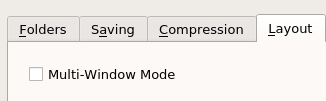
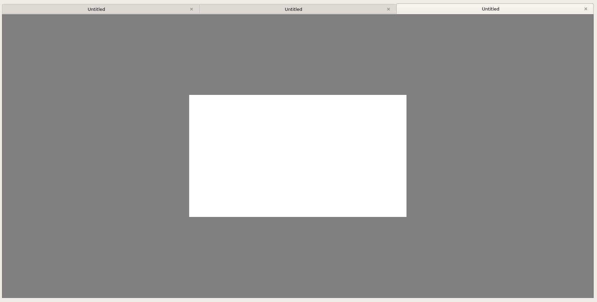
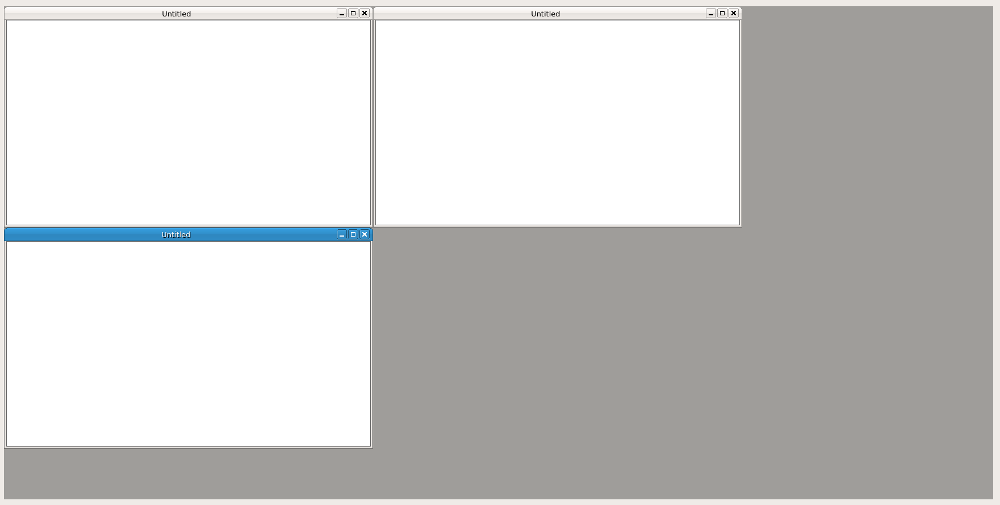

Using the Window modes will give you options on how you work with your images. To switch window mode use the Layout tab inside Preferences and select "Multi-Window mode".
The default mode will be tabs. This should be familiar to most users.
The MDI option will use child windows inside the main (parent) window. This is a little less modern but some users prefer this option.
